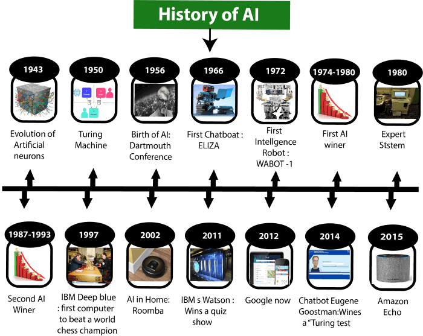

History of Artificial intelligence Page
Links:
The history of Artificial Intelligence (AI) began in antiquity, with myths, stories and rumors of artificial beings endowed with intelligence or consciousness by master craftsmen. The seeds of modern AI were planted by classical philosophers who attempted to describe the process of human thinking as the mechanical manipulation of symbols. This work culminated in the invention of the programmable digital computer in the 1940s, a machine based on the abstract essence of mathematical reasoning. This device and the ideas behind it inspired a handful of scientists to begin seriously discussing the possibility of building an electronic brain.
*This Pictures showes the history of Artificical intelligence.
